| Name | Weight | Function | Damage | Made of | Tile |
|---|---|---|---|---|---|
| hexagonal key | 1s | locks/unlocks hexagonal locks | HM(-8,1d1) | iron | |
| round key | locks/unlocks round locks |
| |||
| small key | locks/unlocks small locks | ||||
| square key | locks/unlocks square locks |
| |||
| tiny key | locks/unlocks tiny locks | ||||
| triangular key | locks/unlocks triangular locks |
|
More info on keys – section 0.14.19.
| Name | UnID'd name | Weight | Function | Damage | Made of | Tile |
|---|---|---|---|---|---|---|
| iron ore | rock with metal veins | 120s | for smithing iron ingots; *RusP | H(+0,1d4) M(-4,1d4) | iron | 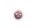 |
| mithril ore | 110s | for smithing mithril ingots | mithril | 
| ||
| adamantium ore | 100s | for smithing adamantium ingots | adamantium | 
| ||
| eternium ore | 90s | for smithing eternium ingots | eternium | |||
| iron ingot | metal ingot | 20s | for smithing iron items | iron | 
| |
| mithril ingot | 14s | for smithing mithril items | mithril | 
| ||
| adamantium ingot | 12s | for smithing adamantium items | adamantium | 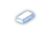 | ||
| eternium ingot | 8s | for smithing eternium items | eternium | 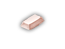 | ||
| anvil | 1000s | required for Smithing; see also 0.14.2 | [-3,+0] H(-8,2d10) M(-4,2d10) | iron | 
|
Ores are used at a forge to create ingots. They can be obtained as loot or be dug from walls with a pickaxe. Ingots are used at a forge to improve items. As well as being made out from ores, they can also be found as loot. See section 0.15.4 for more details about Smithing.
| Name | Skill Needed | Weight | Function | Damage | Made of | Tile |
|---|---|---|---|---|---|---|
| climbing set | Climbing | 180s | required to climb mountains; cursed may fail | H(-3,1d8) M(-6,1d6) | iron | 
|
| cooking set | Cooking | 100s | required to cook | 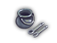 | ||
| fletchery set | Fletchery | 70s | required to make missiles; 1d4+4 charges | 
| ||
| thieves picks | Pick Locks | 5s | required to pick locks [1] | HM(+0, 1d1) | various | 
|
| lump of clay | Necromancy | 5s | required for White Necromancy; see 0.11.8 | H(-2,1d4) M(+0,1d4) | stone | 
|
[1] Cursed have a 5% chance of creating traps when doors are locked with them; increases success chance of Disarm Traps skill.
Use of these tools require possesion of a skill. Without the required skill, they are basically unusable. The opposite is also true – without the tool the skill is unusable as well, the exception being Climbing used to climb out of pits.
| Name | UnID'd name | Weight | Function | Damage | Made of | Tile |
|---|---|---|---|---|---|---|
| fireproof blanket | blanket | 10s | protects inventory from fire damage; consumable | HM(+0,1d1) | various | |
| plain blanket | can be polymorphed or used to cover a pit creating trap | 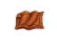 | ||||
| waterproof blanket | protects inventory from water damage | 
|
| Name | UnID'd name | Weight | Function | Damage | Made of | Tile |
|---|---|---|---|---|---|---|
| box with flint and steel | 5s | along with a tinderbox can be used to light torches | HM(-4,1d2) | various | 
| |
| tinderbox | 3s | along with a box with flint and steel can be used to light torches | HM(-4,1d2) | various | 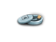 | |
| torch | 10s | light for 50d50+3000/20d10+1000/20d10+100 turns [1] | H(1d4)+(1d4)fire damage | wood | 
| |
| everburning torch | torch | 10s | fire damage when used as a weapon, never runs out of fuel [1] | [+1,+0] H(+1,2d4+2) M(+0,1d6+1) | wood | 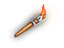 |
[1] Adds 3 tiles to visibility radius if in the tool slot; confuses bees.
| Name | UnID'd name | Weight | Function | Damage | Made of | Tile |
|---|---|---|---|---|---|---|
| bandage | 2s | stops bleeding; bandaging a wound can cause sickness [1] | HM(+0,1d1) | cloth | 
| |
| figurine of wondrous power | figurine | 25s | transforms into tame/neutral/hostile monster when used depending on B/U/C status; see 0.11.4 | H(-8,4d4) M(-8,3d4+1) | stone | 
|
| fluff ball | 2s | dip into potion of water, or equip as missile and activate water trap for gremlins | H(+0,1d1) M(-4,1d1) | various | 
| |
| giant boar skull | 300s | involved in Gaab'Baay quest | H(-4,1d12) M(-10,1d12) | wood | ||
| golden ball | 10s | involved in Frog quest | H(-2,1d4) M(+0,1d4) | gold | ||
| holy symbol | 5s | tests piety level, increases piety by 0.5; turns undead | HM(+0,1d2) | iron gold | 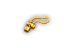 | |
| log | 800s | get from falling trees – 1/12 chance; used for Bridge Building or Fletchery | [-3,+0] H(-12,2d10+4) M(-8,2d10) | wood | 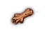 | |
| magical writing set | writing set | 5s | for creating magical scrolls [2]; see 0.5.2 | HM(+0,1d1) | various | |
| marble statue | 2000s | [4] | H(-16,4d8) M(-16,6d6+1) | stone | 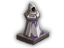 | |
| statue | [3] | kick for wands – St/2000 chance for breaking, otherwise 1d3+1 damage; see 0.14.3 | H(-8,4d4) M(-8,3d4+1) | stone | 
| |
| unfinished statue of an unquestionably famous hero | 2000s | [4] | H(-16,4d8) M(-16,6d6+1) | stone | 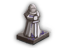 | |
| stethoscope | 5s | reveals monster statistics; see 0.14.8 | HM(+0,1d2) | iron | 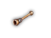 | |
| wooden stick | 30s | wood for missiles used for Fletchery; but logs are better | H(+0,1d3) M(+0,1d2) | wood | 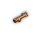 |
[1] Base chance to cause sickness is 33.3% for cursed bandages; modified by Luck up to 50%; uncursed bandages cause sickness if the PC has neither +Luck nor +Fate, but has +Curs (25% chance) or +Doom (100% chance).
[2] Disappears after one use regardless of charges remaining if the PC's Mana attribute is at one, items that grant +Ma do not affect this, workaround: potions of boost mana.
[3] Depending on monster size, a statue weight could be 500s, 1000s, 2000s, or 4000s.
[4] Only found in the Bug-Infested Temple, see 2.3.
| Name | UnID'd name | Weight | Function | Damage | Tile |
|---|---|---|---|---|---|
| +si | strange item | 10s | replicates; see 3.4 | H(+0,1d4) M(-4,1d4) | 
|
| +phial of Caladriel | crystal phial | 2s | uses up PP's to generate light | HM(+0,1d2) | 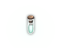 |
| *silver key | 1s | unlocks all doors and bypasses all door traps, even if cursed | HM(-8,1d1) | 
| |
| +Chaos Orb of Elemental Air | 100s | {Dx+10}; air elemental pet + 500 corruption when used | H(+3,2d9+3) M(+3,1d10+3) | 
| |
| +Chaos Orb of Elemental Earth | 100s | {To+10}; earthquake + 300 corruption when used | H(+3,3d9+3) M(+3,1d10+3) | 
| |
| +Chaos Orb of Elemental Fire | 100s | {St+10}; fireball + 300 corruption when used | H(+3,2d9+3) M(+3,1d10+3) | ||
| +Chaos Orb of Elemental Mana | 100s | {Ma+10}; full PP; +10 max PP +3 Ma + 5000 corruption when used | H(+3,1d16+3) M(+3,1d10+3) | 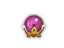 | |
| +Chaos Orb of Elemental Water | 100s | {Wi+10}; full HP + 600 corruption when used | H(+3,2d9+3) M(+3,1d10+3) | 
| |
| +ancient dwarven key | 1s | opens portal at the bottom of Sinister Dungeon; see 2.24.2 | HM(-8,1d1) | 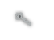 | |
| +cornucopia | horn-shaped basket | 100s | {Ma+13} +Luck +Fate; see 3.6.2.2 | H(+0,1d6) M(+0,1d3) | 
|
| +horn of plenty | horn | 40s | +Luck; see 3.6.2.2 | H(+0,1d6) M(+0,1d3) | 
|
| +weird fire starter | tinderbox | 3s | see 2.14.1.4 | HM(-4,1d2) | 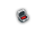 |
| +stone heart "Bergbringer" | stone heart | 1000s | +Curs -Deth -Petr -Stun; see 2.28.2 | H(-10,1d10) M(-10,3d10) |
| Name | Weight | Damage | Made of | Tile |
|---|---|---|---|---|
| flute [2] | 3s | H(-3,1d1) M(+0,1d1) | wood | 
|
| tamborine | 5s | H(-1,1d3) M(+0,1d2) | ||
| fiddle | 15s | H(-1,1d2) M(+0,1d1) | 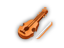 | |
| lute | 20s | H(-1,1d3) M(+0,1d2) | 
| |
| mandoline | 23s | H(-1,1d3) M(+0,1d2) | 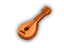 | |
| harp | 30s | H(-1,1d4) M(+0,1d3) | ||
| glockenspiel | 120s | H(-2,1d5) M(+0,1d3) | iron | 
|
| whistle [1] [2] | 1s | H(-3,1d1) M(+0,1d1) | 
|
[1] Does not tame animals; instead it calls any pets nearby to the PC.
[2] Doesn't work in the Water Dragon Cave.
The weight approximates the effectiveness of an instrument. B/U/C status of an instrument determines the range of calming/taming effect (4/3/2 respectively).
| Item | Effect of using |
|---|---|
| Weapons | |
| whips | self-flagellation – moves alignment towards lawful; chance to cure sickness |
| hatchet | chops trees; use logs for Bridge Building |
| pick axe (and Hammerhead) | smashes stone; better results with Mining |
| Food | |
| moss patch of mareilon | blessed or uncursed trains Dx; cursed abuses Dx |
| spenseweed | restores HP; cursed least effective, blessed most effective |
| lump of beeswax | can be used to plug ears and deafen the PC; melts from fire |
| Gems | |
| crystal of darkness | darkens area around PC |
| crystal of fire | creates fireball; thrown creates remote fireball – 6d6 damage |
| crystal of health | restores HP: 12d12/6d6/3d3 B/U/C |
| crystal of knowledge | magic maps small area; blessed Le<20:+1d2Le; else (100-((Le-19)^2))%:+1d2Le; 1%:+1d2Le |
| crystal of light | lights area around PC |
| crystal of power | restores PP: +6d16/+3d8/-4d12 B/U/C |